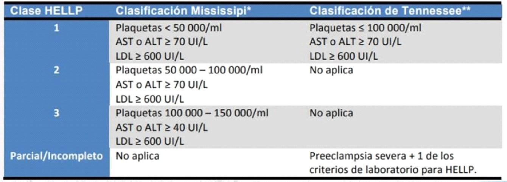
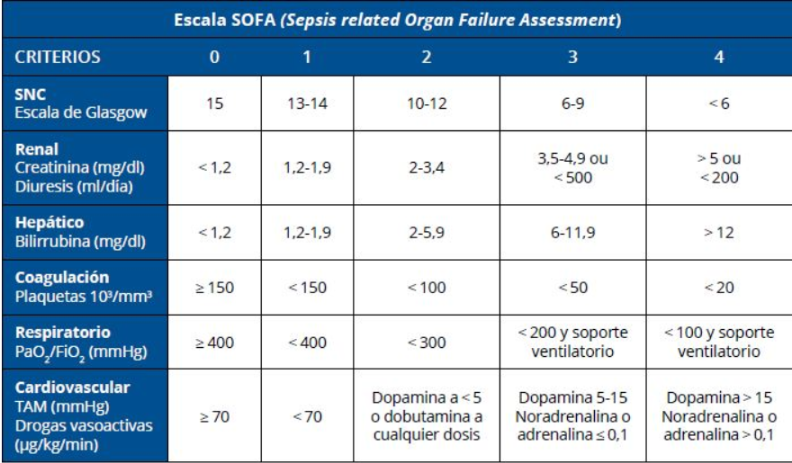
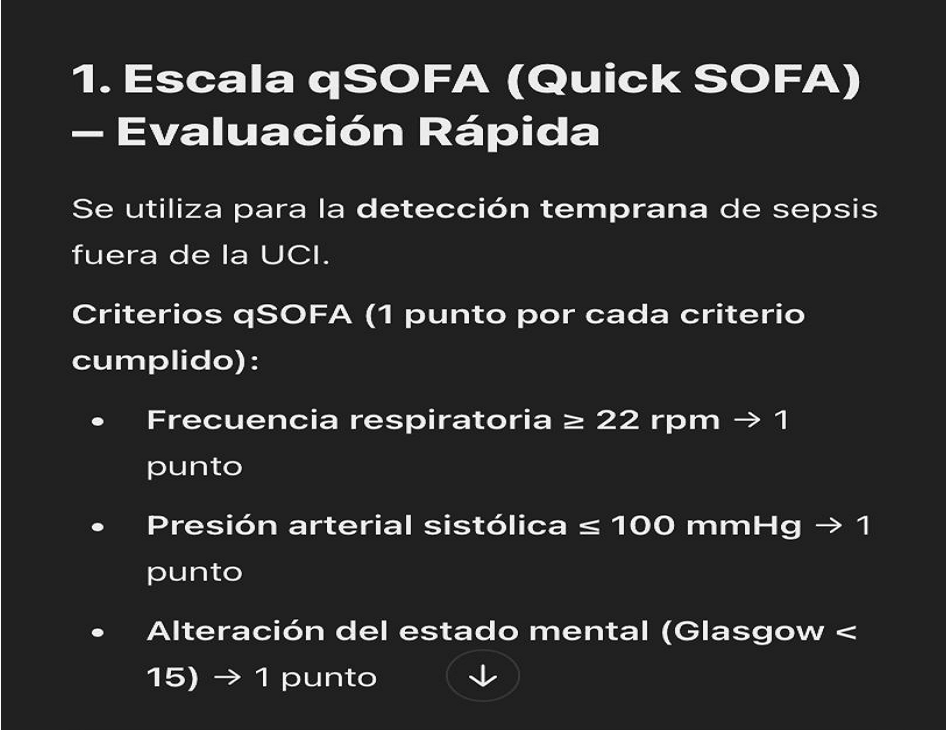

Historia clinica obstetrica
Motivo de Consulta
DOLOR
NO DOLOR
Antecedentes Personales
Antecedentes Familiares
Antecedentes Quirúrgicos
Antecedentes Gineco-Obstétricos
Historia de Embarazos Previos
Historia de Abortos Previos
Embarazo Actual
Examen Físico
a.- Signos Vitales
b.- Examen Físico General
c.- Examen Físico Regional
d.- Examen Físico Gineco-obstétrico
Revisión de Aparatos y Sistemas
Maniobra de Leopold

Claves Obstétricas
Diagnóstico
Mediciones y Pruebas
- Medición de presión arterial: En reposo, en ambos brazos.
- Proteinuria en orina de 24 h o índice proteína/creatinina.
- Hemograma completo: Plaquetas y hematocrito.
- Pruebas de función renal: Urea, creatinina.
- Pruebas hepáticas: AST, ALT.
- Doppler de arterias uterinas: Para evaluar compromiso placentario.
- Perfil biofísico fetal y Doppler umbilical: Para evaluar bienestar fetal.
Signos de Severidad
- Trombocitopenia (<100,000 plaquetas).
- Aumento de transaminasas (>2 veces el valor normal).
- Creatinina elevada (>1.1 mg/dL).
- Edema pulmonar.
- Alteraciones neurológicas o visuales (cefalea, visión borrosa, escotomas).
Factores de Riesgo
- Primigestas, embarazo múltiple, obesidad, edad extrema (<18 o >35 años).
- Antecedentes familiares de preeclampsia.
- Enfermedad renal crónica, diabetes, hipertensión crónica.
Escalas Utilizadas
Clasificación Clínica de Preeclampsia
- Preeclampsia sin signos de severidad: Hipertensión ≥140/90 mmHg, proteinuria leve.
- Preeclampsia con signos de severidad: PA ≥160/110 mmHg, daño a órganos (cefalea, visión borrosa, dolor epigástrico, disnea), plaquetas <100,000, creatinina >1.1 mg/dL, enzimas hepáticas elevadas.
Escala de GESTO para Evaluación del Riesgo de Preeclampsia Severa
- Síntomas neurológicos: 3 puntos.
- Dolor epigástrico o en hipocondrio derecho: 2 puntos.
- PA ≥160/110 mmHg: 3 puntos.
- Proteinuria significativa: 1 punto.
- Plaquetas <100,000: 2 puntos.
- Transaminasas elevadas: 2 puntos.
- ≥6 puntos: Alto riesgo, requiere hospitalización.
Exámenes de Laboratorio Esenciales
- Hemograma (plaquetas).
- Función renal (creatinina, relación proteína/creatinina).
- Función hepática (transaminasas).
- Pruebas de coagulación (descartar CID).
- Ecografía Doppler (flujo placentario alterado en casos graves).
- ✅ Factores de riesgo:
- Antecedentes personales o familiares de preeclampsia
- Hipertensión crónica, obesidad, diabetes, enfermedad renal o autoinmune
- Gestación múltiple, primiparidad, edad materna <20 o >40 años
- Historia de preeclampsia en embarazo previo
- a) Control de la Presión Arterial
- Hipertensión leve (140-159/90-109 mmHg):
- Metildopa 250-500 mg VO cada 8 h (primera línea)
- Labetalol 100-400 mg VO cada 12 h
- Nifedipino 30-60 mg VO cada 24 h
- Hipertensión severa (≥160/110 mmHg) – Urgencia hipertensiva:
- Labetalol IV: 20 mg en bolo, repetir cada 10 min hasta máx. 300 mg
- Hidralazina IV: 5-10 mg cada 20 min
- Nifedipino VO: 10 mg cada 30 min si no hay respuesta IV
- Meta de PA: Mantener entre 140-150/90-100 mmHg (evitar hipotensión).
La eclampsia es una complicación severa de la preeclampsia caracterizada por convulsiones tónico-clónicas generalizadas en una embarazada sin antecedentes de epilepsia. Puede ocurrir durante el embarazo, el parto o el posparto temprano.
El diagnóstico de eclampsia es clínico, basado en:
Criterios de preeclampsia severa
- Presencia de convulsiones tónico-clónicas
- Antecedente de preeclampsia o hipertensión gestacional
- Exclusión de otras causas (epilepsia, neuroinfección, ACV)
- Laboratorio: Hemograma, función renal y hepática, pruebas de coagulación
- Neuroimagen (TAC/RM): Si se sospecha hemorragia cerebral o síndrome de encefalopatía posterior reversible (PRES)
- Cefalea intensa
- Trastornos visuales (visión borrosa, fotopsias)
- Dolor en epigastrio o cuadrante superior derecho
- Hipertensión arterial severa (≥160/110 mmHg)
- Edema y oliguria
- Hiperreflexia
Criterios de preeclampsia severa
- PA ≥ 160/110 mmHg en dos ocasiones con 4 h de diferencia
- Trombocitopenia (<100,000/mm³)
- Elevación de AST/ALT (≥2 veces el valor normal)
- Creatinina >1.1 mg/dL o falla renal
- Edema pulmonar
- Síntomas neurológicos (cefalea persistente, escotomas)
- Precoz (<28 semanas): Forma más grave, alta mortalidad
- Clásica (28-37 semanas): Presentación más común
- Tardía (>48h posparto): Puede aparecer hasta 6 semanas después
-
a) Control de las Convulsiones
- Dosis de carga: 4-6 g IV en 20 min
- Mantenimiento: 1-2 g/h IV por 24 h postconvulsión
- Monitoreo: Reflejos patelares, FR (>12/min), diuresis (>30 mL/h)
- Labetalol IV: 20 mg inicial, repetir cada 10 min hasta 220 mg
- Hidralazina IV: 5-10 mg cada 20 min
- Nifedipino VO: 10 mg cada 30 min (máx. 30 mg)
- Indicación inmediata tras estabilización materna
- Parto vaginal preferido, pero cesárea si hay indicación obstétrica
- Monitorización en UCI
- Soporte ventilatorio en casos graves
- Seguimiento posparto por riesgo de recurrencia
Sulfato de Magnesio (MgSO₄): Fármaco de elección
Si la PA es ≥160/110 mmHg, se utilizan antihipertensivos para prevenir ACV:
El síndrome de HELLP suele aparecer en el tercer trimestre, pero también puede manifestarse en el posparto.
- Dolor en el cuadrante superior derecho o epigastrio
- Náuseas y vómitos
- Cefalea
- Hipertensión arterial
- Edema
- Proteinuria (en algunos casos)
- Compromiso del estado general

- Antihipertensivos (si la presión arterial es ≥160/105 mmHg)
- Labetalol: 20-40 mg IV en bolo, seguido de infusión continua si es necesario.
- Hidralazina: 5-10 mg IV cada 20-30 min.
- Nifedipina: 10 mg VO cada 20-30 min hasta un máximo de 30 mg, seguido de dosis de mantenimiento.
- Sulfato de Magnesio (para prevención de eclampsia)
- Dosis de carga de 4-6 g IV en 15-20 min, seguido de una infusión continua de 1-2 g/h.
- Corticosteroides
- Dexametasona: 10 mg IV cada 12 horas por 2 dosis, seguido de 5 mg IV cada 12 horas por 2 dosis.
- Betametasona: 12 mg intramuscular cada 24 horas por dos dosis.
- Transfusión de sangre
- Concentrado de plaquetas si hay <50,000 plaquetas/mm³ y se requiere cesárea.
- El tratamiento definitivo es el parto, considerando la edad gestacional y la estabilidad materno-fetal.
Acciones Inmediatas
- Activar código de clave roja obstétrica y llamar al equipo de emergencia.
- Manejo inmediato según la causa:
- Hemorragia: Reanimación con líquidos, oxitocina, posible cirugía.
- Hipertensión: Sulfato de magnesio, antihipertensivos, control de convulsiones.
- Sufrimiento fetal: Oxígeno materno, cambio de posición, cesárea urgente si es necesario.
- Monitoreo continuo de signos vitales maternos y bienestar fetal.
- Traslado urgente a quirófano o UCI según el caso.
Pasos a Seguir
-
Evaluar y analizar factores de riesgo:
- Aplique el Score MAMA c/4 horas y registre.
- Reevalúe signos vitales.
- Realice pruebas de bienestar fetal.
- Considere exámenes complementarios y/o evaluación por especialista.
- Si se revierte el puntaje, envíe a casa y realice seguimiento.
-
Tratar y referir según el caso:
- Aplique el Score MAMA c/hora y registre.
- Evalúe signos vitales y signos de alarma.
- Realice un diagnóstico primario.
- Comunique al médico tratante (evaluación en 30 minutos).
- Si no hay mejoría en una hora, referir a mayor complejidad.
- Aliste, active y aplique CLAVE ROJA según el caso obstétrico.
- Transfiera con acompañamiento de un profesional de salud.
Situaciones que Activan la Clave Roja
- Hemorragia obstétrica severa
- Shock hipovolémico
- Eclampsia o preeclampsia severa
- Sepsis materna
- Embolia de líquido amniótico
- Rotura uterina
Objetivos de la Clave Roja
- Atención inmediata para estabilizar a la paciente.
- Detener la hemorragia.
- Restaurar el volumen sanguíneo (transfusiones, líquidos).
- Evitar complicaciones graves o muerte materno-fetal.
- Coordinar cirugías o tratamientos urgentes.
Protocolo de Atención
- Activación del código por cualquier personal de salud.
- Equipo de emergencia obstétrica acude de inmediato.
- Monitoreo y estabilización de signos vitales.
- Reanimación y transfusión si es necesario.
- Intervención quirúrgica o médica según la causa.
Importancia de la Clave Roja
- Reduce la mortalidad materna y fetal.
- Mejora la respuesta hospitalaria ante emergencias obstétricas.
- Facilita una atención rápida y efectiva.
Manejo de Hemorragia Obstétrica
- Masaje uterino.
- Administración de oxitocina y otros uterotónicos.
- Transfusión sanguínea rápida.
- Cirugía en casos extremos (histerectomía).
Medicamentos
- Oxitocina: 10 UI IM o 20-40 UI en 1 litro de solución IV a 250 ml/h.
- Ácido Tranexámico: 1 g IV en bolo lento (10 min), repetir en 30 min si persiste el sangrado.
- Misoprostol: 800 mcg vía rectal (si no hay respuesta a oxitocina).
- Carbetocina (opcional): 100 mcg IV en bolo lento (si hay alto riesgo de HPP).
- Transfusión de sangre si hay signos de shock hipovolémico.
Diagnóstico de Sepsis
El diagnóstico de sepsis se basa en la identificación de una disfunción orgánica potencialmente mortal causada por una respuesta desregulada del huésped a una infección. Se manifiesta con cambios agudos en el puntaje SOFA ≥2 puntos consecutivos a la infección.
Identificación Temprana
La detección precoz se basa en la identificación de dos o más signos del Síndrome de Respuesta Inflamatoria Sistémica (SIRS):
- Temperatura corporal mayor a 38°C o menor a 36°C.
- Frecuencia cardíaca (FC) superior a 90 latidos por minuto.
- Frecuencia respiratoria (FR) mayor a 20 respiraciones por minuto o presión parcial de CO₂ menor a 32 mmHg.
- Recuento de glóbulos blancos superior a 12,000/µL o inferior a 4,000/µL, o con más del 10% de formas inmaduras.
Escalas Utilizadas

Para la evaluación y monitoreo de la paciente, se emplean escalas como el qSOFA y el SOFA completo, que ayudan a determinar la gravedad de la disfunción orgánica y guiar el manejo clínico.

1. Reanimación con Líquidos (Primera Línea)
Solución cristaloide (Cloruro de sodio al 0.9% o Ringer Lactato): 30 ml/kg en los primeros 30-60 minutos.
Se administra en bolo rápido, evaluando respuesta hemodinámica.
2. Antibióticos de Amplio Espectro (Dentro de la Primera Hora)
El esquema depende de la gravedad y del probable foco infeccioso:
- Primera línea (Sin choque séptico):
- Ceftriaxona 2 g IV cada 24 h + Metronidazol 500 mg IV cada 8 h
- Alternativa: Cefotaxima 2 g IV cada 8 h + Metronidazol 500 mg IV cada 8 h
- Primera línea (Con choque séptico o sepsis grave):
- Meropenem 1 g IV cada 8 h + Vancomicina 15 mg/kg IV cada 12 h
- Alternativa en alergia a β-lactámicos: Clindamicina 600-900 mg IV cada 8 h + Gentamicina 5 mg/kg IV cada 24 h
- Si hay sospecha de anaerobios: Agregar Metronidazol 500 mg IV cada 8 h
3. Soporte Vasopresor (Si Persiste Hipotensión tras Líquidos)
- Noradrenalina IV: 0.05-1 µg/kg/min, titulando hasta alcanzar PAM ≥65 mmHg.
- Alternativa: Dopamina 5-20 µg/kg/min IV si no se dispone de noradrenalina.
4. Corticoterapia (Solo si Hay Shock Séptico Refractario)
Hidrocortisona 200 mg IV cada 24 h en infusión continua o en bolos de 50 mg cada 6 h.
5. Control de la Fuente de Infección
Si hay un absceso, endometritis o infección intrauterina, puede requerirse drenaje quirúrgico, evacuación uterina o histerectomía de emergencia.
6. Soporte Adicional
- Oxigenoterapia: Para mantener SatO₂ > 90%.
- Monitorización de diuresis: ≥ 0.5 ml/kg/h indica perfusión adecuada.
- Corrección de hiperglucemia: Mantener glucosa <180 mg/dl con insulina IV si es necesario.
- Transfusión sanguínea: Si hemoglobina <7 g/dl.
El shock es una condición médica crítica que se caracteriza por la reducción del flujo sanguíneo efectivo en el cuerpo, lo que puede llevar a un fallo multiorgánico si no se trata rápidamente. Existen varios tipos de shock, cada uno con causas y características diferentes.
Causa: Pérdida de volumen sanguíneo o de líquidos corporales, como en el caso de hemorragias o deshidrataciones severas.
Síntomas: Taquicardia, hipotensión, piel fría y pálida, llenado capilar retardado.
Causa: Fallo del corazón para bombear sangre adecuadamente, frecuentemente debido a un infarto de miocardio.
Síntomas: Hipotensión, congestión pulmonar, distensión venosa yugular, piel fría y sudorosa.
Causa: Distribución anormal del flujo sanguíneo.
- Shock séptico: Infección severa.
- Shock anafiláctico: Reacción alérgica severa.
- Shock neurogénico: Lesión en el sistema nervioso.
Síntomas: Hipotensión, piel caliente y enrojecida (especialmente en el shock séptico), dificultad respiratoria (en anafilaxia), bradicardia (en shock neurogénico).
Causa: Obstrucción del flujo sanguíneo, como en el caso de un taponamiento cardíaco o embolia pulmonar.
Síntomas: Hipotensión, distensión venosa yugular, taquicardia, signos de congestión.
El diagnóstico temprano es crucial e incluye un examen físico completo, historial médico y pruebas de laboratorio y de imagen según sea necesario.
El manejo inicial del shock incluye la estabilización del paciente con medidas como administración de líquidos intravenosos, medicamentos vasopresores o inotrópicos, y tratamiento de la causa subyacente.
¿Labor de parto?
El Score MAMÁ evalúa el riesgo obstétrico en mujeres embarazadas y puérperas. Interpretación:
- 0-2: Riesgo bajo
- 3-4: Riesgo moderado
- 5-8: Riesgo alto

¿Labor de parto?
1er Trimestre
2do Trimestre
3er Trimestre
Adicionales
Enfermedades en el Embarazo
a. Anemia en el embarazo
- Signos y síntomas: Fatiga, debilidad, palidez, mareos, cefalea, disnea, taquicardia, pica.
- Signos de alarma: Disnea severa incluso en reposo, taquicardia persistente.
- Tratamiento: Suplemento de hierro y ácido fólico.
b. Diabetes gestacional
- Signos y síntomas: Polidipsia, poliuria, polifagia, aumento exesivo de peso, visión borrosa, infecciones recurrentes.
- Signos de alarma: Hiperglucemia persistente, cetonuria, episodios de hipoglucemia severa.
- Tratamiento: Dieta controlada, insulina si es necesarea.
c. Hipertensión gestacional (incluyendo preeclampsia)
- Signos y síntomas: Hipertensión arterial (>= 140/90mmHg), edema (cara, manos y pies), cefalea, escotomas, visión borrosa, dolor epigastrio o hipocondrio derecho, nausea o vómito
- Signos de alarma: Presión arterial >= 160/110mmHg, convulsiones(eclampsia), oliguria, hemorragia o desprendimiento placentario, alteraciones del bienestar fetal
- Tratamiento: Control con antihipertensivos (metildopa).
d. Infección urinaria (incluyendo bacteriuria, cistitis o pielonefritis)
- Signos y síntomas: Disuria, polaquiuria, orina turbia, con olor fuerte o hematuria, dolor suprapúbico o lumbar, fiebre en pielonefritis.
- Signos de alarma: Fiebre alta persistente (>38 °C), dolor lumbar intenso, asociado a náuseas o vómitos, sepsis o signos de shock, trabajo de parto prematuro (si se asocia a pielonefritis).
- Tratamiento: Antibióticos seguros (amoxicilina, nitrofurantoína).